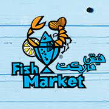
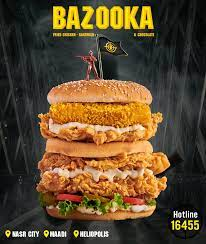
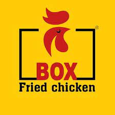
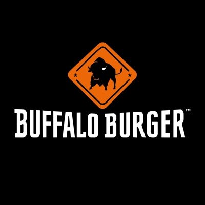
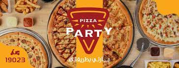
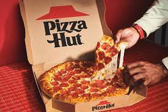

- Fish Market
Fish Market is a renowned seafood restaurant located in Cairo. It offers a vibrant and lively dining experience, with an impressive display of fresh seafood where customers can choose their preferred fish or seafood. The restaurant's skilled chefs prepare the dishes to perfection, incorporating various cooking techniques and flavors. With its cozy ambiance and delicious seafood offerings, Fish Market is a popular choice for seafood lovers in Cairo.
 - Abou El Sid Seafood
Abou El Sid Seafood is a well-established seafood restaurant situated in Alexandria, a city famous for its coastal location and seafood culinary traditions. The restaurant specializes in serving a wide array of seafood dishes, including grilled fish, shrimp, calamari, and more. It combines traditional Egyptian flavors with a modern twist, providing guests with a delightful dining experience. Abou El Sid Seafood is known for its impeccable service, inviting atmosphere, and delectable seafood delicacies.
- BAZOOKA
Bazooka is a restaurant located in Egypt, serving a selection of Burgers, Chicken, Fried chicken that delivers across 15th of May City, 24 October, 45 Street - El A'mawra, 45 Street - El A'mawra 2 and 45 Street - Izbat El Amrawy. Their best-selling dishes are R P G, Share Combo Single, Share Combo Double, and Combo El Sa3ada, although they have a variety of dishes and meals to choose from like Burgers, Chicken, Fried chicken.
 - Box Fried Chicken
Box Fried Chicken is a restaurant located in Egypt, serving a selection of Fried chicken, Arabic that delivers across El Helw Street. Their best-selling dishes are Medium combo, Dinner Broast, double box special sandwich, and Ringo 150gm, although they have a variety of dishes and meals to choose from like Fried chicken, Arabic.

- London Burger
London Burger is a restaurant located in Egypt, serving a selection of Burgers, Sandwiches that deliver across Mostashfayat El Gama'a. Their best-selling dishes are Make It Combo, Fried Chicken Burger, Classic Chicken Burger Sandwich, and Volcano Burger Sandwich, although they have a variety of dishes and meals to choose from like Burgers, Sandwiches.

- Buffalo Burger
Buffalo Burger is a restaurant located in Egypt, serving a selection of Burgers, Sandwiches that deliver across 6th of October - 10th District, 6th of October - 11th District, 6th of October - 12th District, 6th of October - 2nd District, and 6th of October - 3rd District. Their best-selling dishes are Fire Combo, Charbroiled BBQ, Charbroiled BBQ Combo, and Buffalo Play, although they have a variety of dishes and meals to choose from like Burgers, Sandwiches.

- Pizza Party
Pizza Party is a restaurant located in Egypt, serving a selection of Pizza, Burgers, Pasta that delivers across 1st District, 2nd District, 3rd District, 4th District, and 5th District. Their best-selling dishes are Cordon Bleu Sandwich, Friskies French Fries, Chicken Rizo, and Classic Beef Burger Sandwich, although they have a variety of dishes and meals to choose from like Pizza, Burgers, Pasta.
 - Pizza Hut
Pizza Hut - Tourist is a restaurant located in Egypt, serving a selection of Pizza, Pasta, Street Food that delivers across Abo Nawas, Al Dahar, Arabia Area, El Centre Eliby, and El Dary Jouhina. Their best-selling dishes are Pan Pizza - Chicken Supreme, Melts Spicy Chicken Ranch, Pan Pizza - Margarita, and Buffalo Wings, although they have a variety of dishes and meals to choose from like Pizza, Pasta, Street Food.
